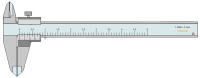
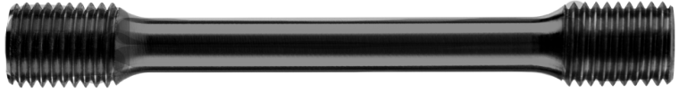

Tools
Instructions
UTM Machine

Vernier Caliper

Iron Sample
Step 1: Gauge length of the sample
Right click on venier caliper and click on pin.
Place the sample on the venier caliper.
Take the gauge length and enter it below:
Length:
mm
Step 2: Take the diameter of the sample
Right click on venier caliper and click on unload sample.
Now, Right click on sample and click on rotate.
Place the sample on the venier caliper.
Take the diameter and enter it below:
Diameter:
mm
Step 3: Place sample on UTM machine.
Place the sample on the machine.
You can adjust zoom level also (Via Mouse Wheel).
Step 4: Start the test.
Click below buttons to start the machine.
Start Test
Plot
Load in kN
Displacement Reading (mm)
Step 5: Activity.
Click next button to continue.
Step 6: Measure final length.
Right click on venier caliper and click on "Pin"
Place the sample on the venier caliper and take the length.
Change in length is negligible.
Step 7: Measure final diameter
Right click on venier caliper and click on unload sample.
Now, Right click on sample and click on rotate.
Place the sample on the venier caliper and take the diameter.
Change in diameter is negligible.
Step 8: Results
Next
Your browser does not support the HTML5 canvas tag.